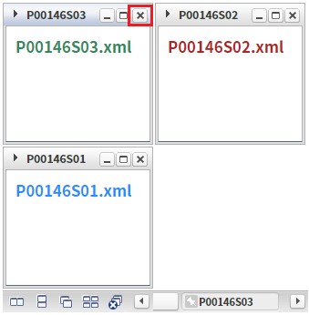
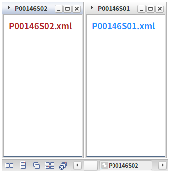
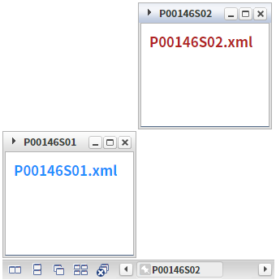
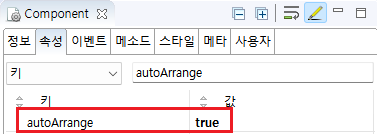

WindowContainer의 'autoArrange' 속성을 사용하여, 윈도우를 닫으면 남은 윈도우가 자동 정렬되도록 설정한 예제입니다.
윈도우 자동 정렬 기능 설정
(기본) 윈도우 자동 정렬 기능 미설정
예제 영역 '윈도우 자동 정렬 기능 설정'에서 테스트합니다.1
STEP 1: WindowContainer의 첫번째 윈도우를 닫습니다.
Image 1.브라우저(Chrome) 실행 예시

2
STEP 2: 실행 결과를 확인합니다.
남은 윈도우가 재 정렬됩니다.
Image 2.브라우저(Chrome) 실행 예시

예제 영역 '(기본 설정) 윈도우 자동 정렬 기능 미설정'에서 테스트합니다.1
STEP 1: WindowContainer의 첫번째 윈도우를 닫습니다.
Image 3.브라우저(Chrome) 실행 예시
2
STEP 2: 실행 결과를 확인합니다.
남은 윈도우의 위치가 동일하게 유지됩니다.
Image 4.브라우저(Chrome) 실행 예시

1
WindowContainer의 속성을 정의합니다.
[필수] autoArrange="true"
윈도우 재정렬 지정
Image 5.웹스퀘어 스튜디오의 Component View 예시

Example 1.Source
<!-- windowContainer 의 소스 본문 예시 --> <w2:windowContainer autoArrange="true" id="wdc_exam2"> <!-- 중략 --> </w2:windowContainer>
autoArrange